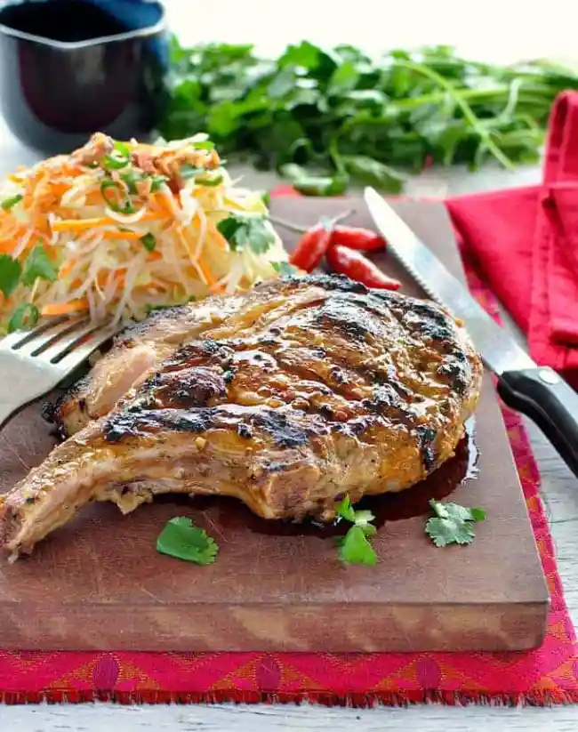

Pork Chops

Description
This is a great pork chop recipe for people with a sweet tooth. I usually serve it with rice.
Ingredients
- 6 pork chops
- 1 (1 ounce) package dry onion soup mix
- 10 ounces Russian-style salad dressing
- 1 cup apricot preserves
Steps
- Preheat oven to 350 degrees F (175 degrees C).
- Place the pork chops into a casserole dish. Mix onion soup mix, Russian dressing and apricot preserves together.
- Pour mixture over chops and bake for 1 hour.
- Enjoy!